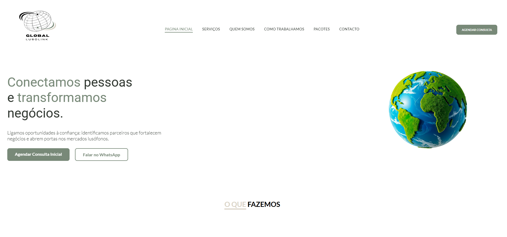
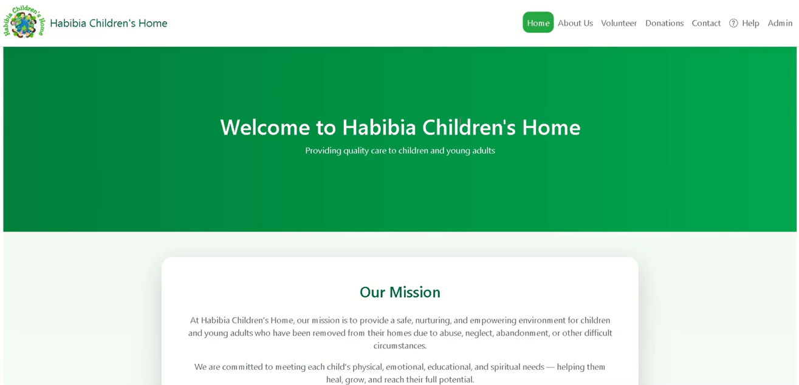
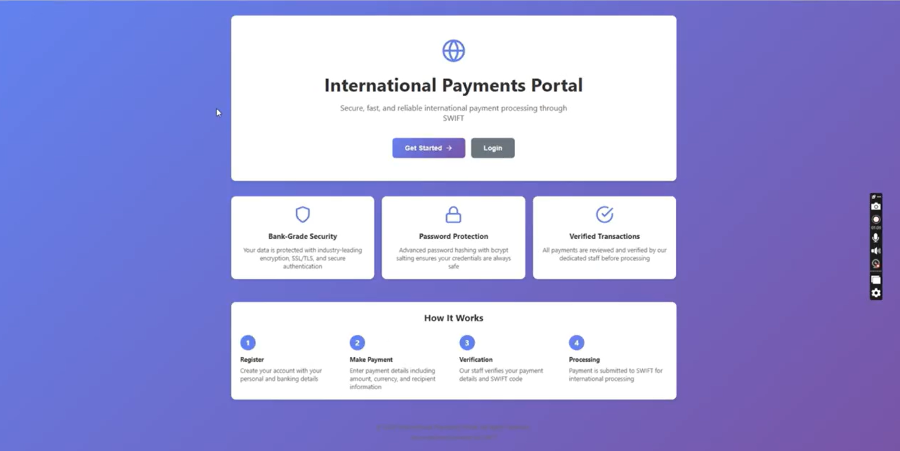

Projects

LOIC KIBAMBO UCT STUDENT Portfolio
This project was a personal portfolio website created for an Electrical Engineer who is a UCT student.
The client wanted a professional online presence to showcase his skills and projects.
I designed and built the portfolio using Wix, ensuring a clean and responsive layout,
custom sections for project showcase, and a fully navigable interface. I guided the client through
content structuring and branding to ensure the website highlighted his strengths effectively.
Review Project

UCT Project African National League (INF40001N) 
Developed an information system for the African Nation Group, part of the National League Project at the University of Cape Town.
The system was designed to manage league data, track team statistics, and provide real-time reporting.
I implemented it using C#, .NET MVC, and SQL Server,
applying MVC patterns and creating intuitive interfaces for administrators and users.
I also integrated authentication and role-based access control to ensure secure data management.
Review Project
 - Copy - Copy.svg)
WISE SAVER
WiseSaver is a comprehensive personal budgeting app designed to help users track income, manage expenses, and achieve their financial goals. The app features real-time spending insights, automated bill and subscription tracking, shared budgets for families or groups, and a clean, intuitive interface. I was involved in every aspect of the project, from initial design to full implementation, ensuring a seamless and user-friendly experience. Review Project
Kotlin - Android Studio - FireBase - Copy - Copy.svg)
SOUS CHEF
Sous Chef is a modern recipe and meal management app designed to simplify cooking and meal planning. Users can securely sign in, create and organize recipes, manage pantry supplies, plan meals with reminders, and explore other users’ recipes. The app emphasizes customization, with features like dark mode, profile personalization, and advanced search and filtering. I was involved in all aspects of the project, from design and implementation to creating an intuitive and seamless user experience. Review Project
Kotlin - Android Studio - RESTful API - Copy.svg)
MUNICIPAL SERVICES WEB APPLICATION
A web platform designed to help municipalities improve citizen engagement. Users can report issues, view local events, and stay informed through announcements. I developed the entire project independently from UI design to backend logic and database integration ensuring full functionality across all modules. Review Project
C# - Razor Pages - SQL Server - Bootstrap - HTML - CSS
LET'S GOT TO ICC CHURCH
Developed a transport application to allow church members to book rides to services and events, improving accessibility and coordination within the community. Key Contributions: Built landing, login, registration, and dashboard pages using React.js Created reusable components for different user roles (admin, drivers, members) Integrated backend REST APIs for trip booking, driver management, and availability features Ensured responsive and accessible UI for desktop and mobile Impact: Delivered an MVP that streamlined transport coordination, strengthened frontend engineering skills, and demonstrated independent project execution. Review Project
React.js - JavaScript / HTML / CSS - MongoDB
Global LuSolink
I was responsible for the UI and UX design for the Global LuSolink website.
I handled the project from the initial design stage to deployment, taking care of front-end development,
responsive layouts, and interactive elements. My role ensured a seamless experience for all users,
maintaining brand consistency and intuitive navigation throughout the website.
Review Project

HAbibia Children's Home
I served as Project Manager and Software Engineer leading a team to build a website
for HAbibia Children's Home. I oversaw the entire development process, from gathering requirements
and designing the architecture to implementing features, testing, and deployment.
The website was designed to showcase the home’s mission, facilitate donations, and provide
information to the community. My leadership ensured the project was delivered efficiently
and met all objectives.
Review Project

International Payment Banking System
Developed a secure system for international payments, allowing customers and staff to register,
login, and make payments in multiple currencies. I implemented features for transaction tracking,
account management, and secure authentication. The project focused on delivering a reliable and
scalable payment platform while ensuring data security and user-friendly experience.
Review Project
.svg)